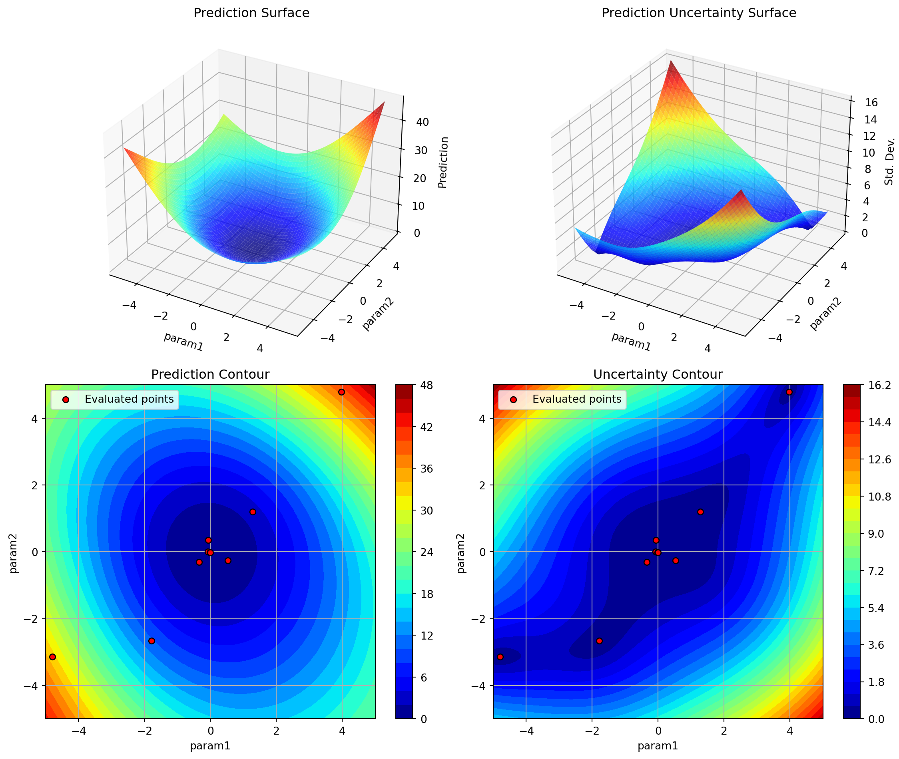
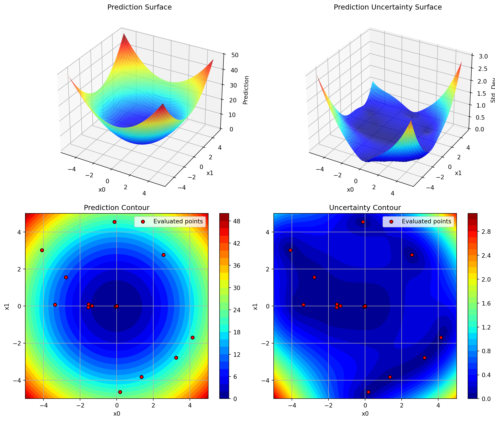

Maximum number of total function evaluations (including initial design). For example, max_iter=30 with n_initial=10 will perform 10 initial evaluations plus 20 sequential optimization iterations. Defaults to 20.
Surrogate model with scikit-learn interface (fit/predict methods). If None, uses a Gaussian Process Regressor with Matern kernel. Default configuration:: from sklearn.gaussian_process import GaussianProcessRegressor from sklearn.gaussian_process.kernels import Matern, ConstantKernel kernel = ConstantKernel(1.0, (1e-2, 1e12)) * Matern(length_scale=1.0, length_scale_bounds=(1e-4, 1e2), nu=2.5) surrogate = GaussianProcessRegressor(kernel=kernel, n_restarts_optimizer=100) surrogate = GaussianProcessRegressor( kernel=kernel, n_restarts_optimizer=10, normalize_y=True, random_state=self.seed, ) Alternative surrogates can be provided, including SpotOptim’s Kriging model, Random Forests, or any scikit-learn compatible regressor. See Examples section. Defaults to None (uses default Gaussian Process configuration).
Acquisition function (‘ei’, ‘y’, ‘pi’). Defaults to ‘y’.
'y'
var_type
list of str
Variable types for each dimension. Supported types: - ‘float’: Python floats, continuous optimization (no rounding) - ‘int’: Python int, float values will be rounded to integers - ‘factor’: Unordered categorical data, internally mapped to int values (e.g., “red”->0, “green”->1, etc.) Defaults to None (which sets all dimensions to ‘float’).
None
var_name
list of str
Variable names for each dimension. If None, uses default names [‘x0’, ‘x1’, ‘x2’, …]. Defaults to None.
Minimum distance between points. Defaults to np.sqrt(np.spacing(1))
None
var_trans
list of str
Variable transformations for each dimension. Supported: - ‘log’: Logarithmic transformation, e.g. “log10” for base-10 log - ‘sqrt’: Square root transformation, “sqrt” for square root - None or ‘id’ or ‘None’: No transformation Defaults to None (no transformations).
Maximum runtime in minutes. If np.inf (default), no time limit. The optimization terminates when either max_iter evaluations are reached OR max_time minutes have elapsed, whichever comes first. Defaults to np.inf.
Number of times to evaluate each initial design point. Useful for noisy objective functions. If > 1, noise handling is activated and statistics (mean, variance) are tracked. Defaults to 1.
Number of times to evaluate each surrogate-suggested point. Useful for noisy objective functions. If > 1, noise handling is activated and statistics (mean, variance) are tracked. Defaults to 1.
Number of additional evaluations to allocate using Optimal Computing Budget Allocation (OCBA) when noise handling is active. OCBA determines which existing design points should be re-evaluated to best distinguish between alternatives. Only used when repeats_surrogate > 1 and ocba_delta > 0. Requires at least 3 design points with variance information. Defaults to 0 (no OCBA).
Enable TensorBoard logging. If True, optimization metrics and hyperparameters are logged to TensorBoard. View logs by running: tensorboard --logdir=<tensorboard_path> in a separate terminal. Defaults to False.
If True, removes all old TensorBoard log directories from the ‘runs’ folder before starting optimization. Use with caution as this permanently deletes all subdirectories in ‘runs’. Defaults to False.
Function to convert multi-objective values to single-objective. Takes an array of shape (n_samples, n_objectives) and returns array of shape (n_samples,). If None and objective function returns multi-objective values, uses first objective. Defaults to None.
Number of infill points to suggest at each iteration. Defaults to 1. If > 1, multiple distinct points are proposed using the optimizer and fallback strategies.
Maximum number of points to use for surrogate model fitting. If None, all points are used. If the number of evaluated points exceeds this limit, a subset is selected using the selection method. Defaults to None.
Method for selecting points when max_surrogate_points is exceeded. Options: ‘distant’ (Select points that are distant from each other via K-means clustering) or ‘best’ (Select all points from the cluster with the best mean objective value). Defaults to ‘distant’.
Penalty value to replace NaN/inf values in objective function evaluations. When the objective function returns NaN or inf, these values are replaced with penalty plus a small random noise (sampled from N(0, 0.1)) to avoid identical penalty values. This allows optimization to continue despite occasional function evaluation failures. Defaults to None.
Optimizer to use for maximizing acquisition function. Can be “differential_evolution” (default) or any method name supported by scipy.optimize.minimize (e.g., “Nelder-Mead”, “L-BFGS-B”). Can also be a callable with signature compatible with scipy.optimize.minimize (fun, x0, bounds, …). A specific version is “de_tricands”, which combines DE with Tricands. It can be parameterized with “prob_de_tricands” (probability of using DE). Defaults to “differential_evolution”.
Starting point for optimization, shape (n_features,). If provided, this point will be evaluated first and included in the initial design. The point should be within the bounds and will be validated before use. Defaults to None (no starting point, uses only LHS design).
Probability of using differential evolution as an optimizer on the surrogate model. 1 - prob_de_tricands is the probability of using tricands. Defaults to 0.8.
import numpy as npfrom spotoptim import SpotOptimdef objective(X):return np.sum(X**2, axis=1)# Example 2: With custom variable namesoptimizer = SpotOptim( fun=objective, bounds=[(-5, 5), (-5, 5)], var_name=["param1", "param2"], max_iter=10, n_initial=5)result = optimizer.optimize()# Ensure we can use custom names in plotsoptimizer.plot_surrogate(show=False)

import numpy as npfrom spotoptim import SpotOptim# Example 3: Noisy function with repeated evaluationsdef noisy_objective(X): base = np.sum(X**2, axis=1) noise = np.random.normal(0, 0.1, size=base.shape)return base + noiseoptimizer = SpotOptim( fun=noisy_objective, bounds=[(-5, 5), (-5, 5)], max_iter=30, n_initial=10, repeats_initial=3, # Evaluate each initial point 3 times repeats_surrogate=2, # Evaluate each new point 2 times seed=42, # For reproducibility verbose=True)result = optimizer.optimize()# Access noise statisticsprint("Unique design points:", optimizer.mean_X.shape[0])print("Best mean value:", optimizer.min_mean_y)print("Variance at best point:", optimizer.min_var_y)
TensorBoard logging disabled
Initial best: f(x) = 2.305707, mean best: f(x) = 2.367991
Unique design points: 10
Best mean value: 2.3679913784564808
Variance at best point: 0.0026553713273186792
import numpy as npfrom spotoptim import SpotOptimdef noisy_objective(X): base = np.sum(X**2, axis=1) noise = np.random.normal(0, 0.1, size=base.shape)return base + noise# Example 4: Noisy function with OCBA (Optimal Computing Budget Allocation)optimizer_ocba = SpotOptim( fun=noisy_objective, bounds=[(-5, 5), (-5, 5)], max_iter=50, n_initial=10, repeats_initial=2, # Initial repeats repeats_surrogate=1, # Surrogate repeats ocba_delta=3, # Allocate 3 additional evaluations per iteration seed=42, verbose=True)result = optimizer_ocba.optimize()# OCBA intelligently re-evaluates promising points to reduce uncertaintyprint("Total evaluations:", result.nfev)print("Unique design points:", optimizer_ocba.mean_X.shape[0])print("Best mean value:", optimizer_ocba.min_mean_y)print("Variance at best point:", optimizer_ocba.min_var_y)
TensorBoard logging disabled
Initial best: f(x) = 2.319523, mean best: f(x) = 2.385877
In get_ocba():
means: [25.8857338 11.32118531 10.14985518 2.38587731 20.7190555 21.36600973
16.36904227 14.1099758 18.36970272 20.14080533]
vars: [6.73858271e-13 1.33640624e-08 1.00799409e-03 4.40284305e-03
2.56053422e-03 6.35744853e-04 1.16126758e-02 3.37927306e-03
1.64745915e-03 1.91555606e-03]
delta: 3
n_designs: 10
Ratios: [7.29707371e-11 1.00099067e-05 1.00000000e+00 3.61962598e+00
4.55581054e-01 1.05534624e-01 3.55166445e+00 1.47019506e+00
3.85623766e-01 3.63385525e-01]
Best: 3, Second best: 2
OCBA: Adding 3 re-evaluation(s)
Iter 1 | Best: 2.240418 | Rate: 0.25 | Evals: 48.0% | Mean Best: 2.240418
Iter 2 | Best: 1.594455 | Rate: 0.40 | Evals: 50.0% | Mean Best: 1.594455
Iter 3 | Best: 0.500204 | Rate: 0.50 | Evals: 52.0% | Mean Best: 0.500204
Iter 4 | Best: -0.050742 | Rate: 0.57 | Evals: 54.0% | Mean Best: -0.050742
Iter 5 | Best: -0.050742 | Curr: 0.109333 | Rate: 0.50 | Evals: 56.0% | Mean Curr: 0.109333
Iter 6 | Best: -0.050742 | Curr: -0.016351 | Rate: 0.44 | Evals: 58.0% | Mean Curr: -0.016351
Iter 7 | Best: -0.050742 | Curr: 0.029190 | Rate: 0.40 | Evals: 60.0% | Mean Curr: 0.029190
Iter 8 | Best: -0.050742 | Curr: 0.720357 | Rate: 0.36 | Evals: 62.0% | Mean Curr: 0.720357
Iter 9 | Best: -0.050742 | Curr: 0.440561 | Rate: 0.33 | Evals: 64.0% | Mean Curr: 0.440561
Iter 10 | Best: -0.050742 | Curr: 0.134039 | Rate: 0.31 | Evals: 66.0% | Mean Curr: 0.134039
Iter 11 | Best: -0.104359 | Rate: 0.36 | Evals: 68.0% | Mean Best: -0.104359
Iter 12 | Best: -0.104359 | Curr: 0.093697 | Rate: 0.33 | Evals: 70.0% | Mean Curr: 0.093697
Iter 13 | Best: -0.104359 | Curr: -0.011963 | Rate: 0.31 | Evals: 72.0% | Mean Curr: -0.011963
Iter 14 | Best: -0.104359 | Curr: 0.058689 | Rate: 0.29 | Evals: 74.0% | Mean Curr: 0.058689
Iter 15 | Best: -0.104359 | Curr: -0.016010 | Rate: 0.28 | Evals: 76.0% | Mean Curr: -0.016010
Iter 16 | Best: -0.104359 | Curr: 0.098153 | Rate: 0.26 | Evals: 78.0% | Mean Curr: 0.098153
Iter 17 | Best: -0.104359 | Curr: 0.038064 | Rate: 0.25 | Evals: 80.0% | Mean Curr: 0.038064
Iter 18 | Best: -0.104359 | Curr: 0.742283 | Rate: 0.24 | Evals: 82.0% | Mean Curr: 0.742283
Iter 19 | Best: -0.104359 | Curr: 0.262925 | Rate: 0.23 | Evals: 84.0% | Mean Curr: 0.262925
Iter 20 | Best: -0.104359 | Curr: -0.006529 | Rate: 0.22 | Evals: 86.0% | Mean Curr: -0.006529
Iter 21 | Best: -0.104359 | Curr: 0.077486 | Rate: 0.21 | Evals: 88.0% | Mean Curr: 0.077486
Iter 22 | Best: -0.146086 | Rate: 0.24 | Evals: 90.0% | Mean Best: -0.146086
Iter 23 | Best: -0.146086 | Curr: -0.069235 | Rate: 0.23 | Evals: 92.0% | Mean Curr: -0.069235
Iter 24 | Best: -0.146086 | Curr: 0.137256 | Rate: 0.22 | Evals: 94.0% | Mean Curr: 0.137256
Iter 25 | Best: -0.146086 | Curr: 0.108752 | Rate: 0.21 | Evals: 96.0% | Mean Curr: 0.108752
Iter 26 | Best: -0.146086 | Curr: 0.099482 | Rate: 0.21 | Evals: 98.0% | Mean Curr: 0.099482
Iter 27 | Best: -0.175205 | Rate: 0.23 | Evals: 100.0% | Mean Best: -0.175205
Total evaluations: 50
Unique design points: 37
Best mean value: -0.1752048981960286
Variance at best point: 0.0
import numpy as npfrom spotoptim import SpotOptimfrom sklearn.ensemble import RandomForestRegressordef objective(X):return np.sum(X**2, axis=1)# Example 8: Using Random Forest as surrogaterf_model = RandomForestRegressor( n_estimators=100, max_depth=10, random_state=42)optimizer_rf = SpotOptim( fun=objective, bounds=[(-5, 5), (-5, 5)], surrogate=rf_model, max_iter=15, n_initial=5, seed=42)result = optimizer_rf.optimize()# Note: Random Forests don't provide uncertainty estimates,# so Expected Improvement (EI) may be less effective.# Consider using acquisition='y' for pure exploitation.
import numpy as npfrom spotoptim import SpotOptimfrom sklearn.gaussian_process import GaussianProcessRegressorfrom sklearn.gaussian_process.kernels import Matern, RationalQuadratic, ConstantKernel, RBFdef objective(X):return np.sum(X**2, axis=1)# Example 9: Comparing different kernels for Gaussian Process# Matern kernel with nu=1.5 (once differentiable)kernel_matern15 = ConstantKernel(1.0) * Matern(length_scale=1.0, nu=1.5)gp_matern15 = GaussianProcessRegressor(kernel=kernel_matern15, normalize_y=True)# Matern kernel with nu=2.5 (twice differentiable, DEFAULT)kernel_matern25 = ConstantKernel(1.0) * Matern(length_scale=1.0, nu=2.5)gp_matern25 = GaussianProcessRegressor(kernel=kernel_matern25, normalize_y=True)# RBF kernel (infinitely differentiable, smooth)kernel_rbf = ConstantKernel(1.0) * RBF(length_scale=1.0)gp_rbf = GaussianProcessRegressor(kernel=kernel_rbf, normalize_y=True)# Rational Quadratic kernel (mixture of RBF kernels)kernel_rq = ConstantKernel(1.0) * RationalQuadratic(length_scale=1.0, alpha=1.0)gp_rq = GaussianProcessRegressor(kernel=kernel_rq, normalize_y=True)# Use any of these as surrogateoptimizer_rbf = SpotOptim(fun=objective, bounds=[(-5, 5), (-5, 5)], surrogate=gp_rbf, max_iter=15, n_initial=5)result = optimizer_rbf.optimize()
A tuple containing: * X_agg (ndarray): Unique design points, shape (n_groups, n_features) * y_mean (ndarray): Mean y values per group, shape (n_groups,) * y_var (ndarray): Variance of y values per group, shape (n_groups,)
Apply Optimal Computing Budget Allocation for noisy functions.
Determines which existing design points should be re-evaluated based on OCBA algorithm. This method computes optimal budget allocation to improve the quality of the estimated best design.
Optional[ndarray]: Array of design points to re-evaluate, shape (n_re_eval, n_features). Returns None if OCBA conditions are not met or OCBA is disabled.
Note
OCBA is only applied when: * (self.repeats_initial > 1) or (self.repeats_surrogate > 1) * self.ocba_delta > 0 * All variances are > 0 * At least 3 design points exist
Examples
import numpy as npfrom spotoptim import SpotOptimopt = SpotOptim( fun=lambda X: np.sum(X**2, axis=1) + np.random.normal(0, 0.1, X.shape[0]), bounds=[(-5, 5), (-5, 5)], n_initial=5, repeats_surrogate=2, ocba_delta=5, verbose=True)# Simulate optimization state (normally done in optimize())opt.mean_X = np.array([[1, 2], [0, 0], [2, 1]])opt.mean_y = np.array([5.0, 0.1, 5.0])opt.var_y = np.array([0.1, 0.05, 0.15])X_ocba = opt.apply_ocba()# OCBA: Adding 5 re-evaluation(s).# The following should be true:print(X_ocba.shape[0] ==5)
SpotOptim.SpotOptim.apply_penalty_NA( y, y_history=None, penalty_value=None, sd=0.1,)
Replace NaN and infinite values with penalty plus random noise. Used in the optimize() method after function evaluations.
This method follows the approach from spotpython.utils.repair.apply_penalty_NA, replacing NaN/inf values with a penalty value plus random noise to avoid identical penalty values.
Parameters
Name
Type
Description
Default
y
ndarray
Array of objective function values to be repaired.
required
y_history
ndarray
Historical objective function values used for computing penalty statistics. If None, uses y itself. Default is None.
Value to replace NaN/inf with. If None, computes penalty as: max(finite_y_history) + 3 * std(finite_y_history). If all values are NaN/inf or only one finite value exists, falls back to self.penalty_val. Default is None.
Array with NaN/inf replaced by penalty_value + random noise (normal distributed with mean 0 and standard deviation sd).
Examples
import numpy as npfrom spotoptim import SpotOptimopt = SpotOptim(fun=lambda X: np.sum(X**2, axis=1), bounds=[(-5, 5)])y_hist = np.array([1.0, 2.0, 3.0, 5.0])y_new = np.array([4.0, np.nan, np.inf])y_clean = opt.apply_penalty_NA(y_new, y_history=y_hist)print(f"np.all(np.isfinite(y_clean)): {np.all(np.isfinite(y_clean))}")print(f"y_clean: {y_clean}")# NaN/inf replaced with worst value from history + 3*std + noiseprint(f"y_clean[1] > 5.0: {y_clean[1] >5.0}") # Should be larger than max finite value in history
List of variable types (‘factor’ or ‘float’) for each dimension. Dimensions with factor mappings are assigned ‘factor’, others ‘float’.
Examples
from spotoptim import SpotOptim# Define a simple objective mapping names to values for demonstrationdef objective(X):# X has shape (n_samples, n_dimensions)return X[:, 0] + X[:, 1]# The first dimension has factor levels ('red', 'green', 'blue')# The second dimension is continuous bounds (0, 10)spot = SpotOptim(fun=objective, bounds=[('red', 'green', 'blue'), (0, 10)])print(spot.detect_var_type())
Checks the termination conditions and returns an appropriate message indicating why the optimization stopped. Three possible termination conditions are checked in order of priority: 1. Maximum number of evaluations reached 2. Maximum time limit exceeded 3. Successful completion (neither limit reached)
Optimization terminated: maximum evaluations (20) reached
# Case 2: Time limit exceededimport numpy as npimport timefrom spotoptim import SpotOptimopt.y_ = np.zeros(10) # Only 10 evaluationsstart_time = time.time() -700# Simulate 11.67 minutes elapsedmsg = opt.determine_termination(start_time)print(msg)
Optimization terminated: time limit (10.00 min) reached
# Case 3: Successful completionimport numpy as npimport timefrom spotoptim import SpotOptimopt.y_ = np.zeros(10) # Under max_iterstart_time = time.time() # Just startedmsg = opt.determine_termination(start_time)print(msg)
Optimization finished successfully
evaluate_function
SpotOptim.SpotOptim.evaluate_function(X)
Evaluate objective function at points X. Used in the optimize() method to evaluate the objective function.
Input Space: X is expected in Transformed and Mapped Space (Internal scale, Reduced dimensions). Process as follows: 1. Expands X to Transformed Space (Full dimensions) if dimension reduction is active. 2. Inverse transforms X to Natural Space (Original scale). 3. Evaluates the user function with points in Natural Space.
If dimension reduction is active, expands X to full dimensions before evaluation. Supports both single-objective and multi-objective functions. For multi-objective functions, converts to single-objective using mo2so method.
Parameters
Name
Type
Description
Default
X
ndarray
Points to evaluate in Transformed and Mapped Space, shape (n_samples, n_reduced_features).
Get the best hyperparameter configuration found during optimization.
If noise handling is active (repeats_initial > 1 or OCBA), this returns the parameter configuration associated with the best mean objective value. Otherwise, it returns the configuration associated with the absolute best observed value.
Union[Dict[str, Any], np.ndarray, None]: The best hyperparameter configuration. Returns None if optimization hasn’t started (no data).
Examples
from spotoptim import SpotOptimfrom spotoptim.function import sphereopt = SpotOptim(fun=sphere, bounds=[(-5, 5), (0, 10)], n_initial=5, var_name=["x", "y"], verbose=True)opt.optimize()best_params = opt.get_best_hyperparameters()print(best_params['x']) # Should be close to 0
Get a table string showing the search space design before optimization.
This method generates a table displaying the variable names, types, bounds, and defaults without requiring an optimization run. Useful for inspecting and documenting the search space configuration.
Importance is computed as the normalized sensitivity of each parameter based on the variation in objective values across the evaluated points. Higher scores indicate parameters that have more influence on the objective.
The importance is calculated as
For each dimension, compute the correlation between parameter values and objective values
Handles three scenarios: 1. X0 is None: Generate space-filling design using LHS 2. X0 is None but x0 is provided: Generate LHS and include x0 as first point 3. X0 is provided: Transform and prepare user-provided initial design
Parameters
Name
Type
Description
Default
X0
ndarray
User-provided initial design points in original scale, shape (n_initial, n_features). If None, generates space-filling design. Defaults to None.
Type of unpickleable components to exclude. * “file_io”: Excludes only file I/O components (tb_writer) and fun * “all”: Excludes file I/O, fun, surrogate, and lhs_sampler Defaults to “file_io”.
Whether to include importance scores. Importance is calculated as the normalized standard deviation of each parameter’s effect on the objective. Requires multiple evaluations. Defaults to False.
Sets var_trans to a list of None values if not specified, or normalizes transformation names by converting ‘id’, ‘None’, or None to None. Also validates that var_trans length matches the number of dimensions.
spot.var_trans (should be ['log10', 'None']): ['log10', None]
init_storage
SpotOptim.SpotOptim.init_storage(X0, y0)
Initialize storage for optimization.
Sets up the initial data structures needed for optimization tracking: - X_: Evaluated design points (in original scale) - y_: Function values at evaluated points - n_iter_: Iteration counter
Then updates statistics by calling update_stats().
Parameters
Name
Type
Description
Default
X0
ndarray
Initial design points in internal scale, shape (n_samples, n_features).
from spotoptim import SpotOptimdef sphere(X): X = np.atleast_2d(X)return np.sum(X**2, axis=1)spot = SpotOptim(fun=sphere, bounds=[(1, 10)])spot.inverse_transform_value(10, 'log10')spot.inverse_transform_value(100, 'log(x)')
np.float64(2.6881171418161356e+43)
load_experiment
SpotOptim.SpotOptim.load_experiment(filename)
Load an experiment configuration from a pickle file (’*_exp.pkl’).
Loads an experiment that was saved with save_experiment(). The loaded optimizer will have the configuration and the objective function (thanks to dill).
import numpy as npfrom spotoptim import SpotOptimdef sphere(X): X = np.atleast_2d(X)return np.sum(X**2, axis=1)# Define experiment locallyopt = SpotOptim( fun=sphere, bounds=[(-5, 5), (-5, 5)], max_iter=15, n_initial=10, seed=42)# Save experiment (without results)opt.save_experiment(prefix="sphere_opt")# On remote machine: load and runopt_remote = SpotOptim.load_experiment("sphere_opt_exp.pkl")result = opt_remote.optimize()opt_remote.save_result(prefix="sphere_opt") # Save results
Experiment saved to sphere_opt_exp.pkl
Loaded experiment from sphere_opt_exp.pkl
Experiment saved to sphere_opt_res.pkl
Result saved to sphere_opt_res.pkl
load_result
SpotOptim.SpotOptim.load_result(filename)
Load complete optimization results from a pickle file (suffix ’_res.pkl’)
Loads results that were saved with save_result(). The loaded optimizer will have both configuration and all optimization results.
Experiment saved to sphere_opt_res.pkl
Result saved to sphere_opt_res.pkl
Loaded result from sphere_opt_res.pkl
Best point: [0.00055237 0.00013961]
Best value: 3.24604668370802e-07
Total evaluations: 15
Success rate: 0.9
mo2so
SpotOptim.SpotOptim.mo2so(y_mo)
Convert multi-objective values to single-objective.
Converts multi-objective values to a single-objective value by applying a user-defined function from fun_mo2so. If no user-defined function is given, the values in the first objective column are used.
This method is called after the objective function evaluation. It returns a 1D array with the single-objective values.
Parameters
Name
Type
Description
Default
y_mo
ndarray
If multi-objective, shape (n_samples, n_objectives). If single-objective, shape (n_samples,).
The optimization terminates when either: - Total function evaluations reach max_iter (including initial design), OR - Runtime exceeds max_time minutes
Input/Output Spaces: - Input X0: Expected in Natural Space (original scale, physical units). - Output result.x: Returned in Natural Space. - Output result.X: Returned in Natural Space. - Internal Optimization: Performed in Transformed and Mapped Space.
Parameters
Name
Type
Description
Default
X0
ndarray
Initial design points in Natural Space, shape (n_initial, n_features). If None, generates space-filling design. Defaults to None.
None
Returns
Name
Type
Description
OptimizeResult
OptimizeResult
Optimization result with fields: - x: best point found in Natural Space - fun: best function value - nfev: number of function evaluations (including initial design) - nit: number of sequential optimization iterations (after initial design) - success: whether optimization succeeded - message: termination message indicating reason for stopping, including statistics (function value, iterations, evaluations) - X: all evaluated points in Natural Space - y: all function values
The optimized point(s). If acquisition_fun_return_size == 1, returns 1D array of shape (n_features,). If acquisition_fun_return_size > 1, returns 2D array of shape (N, n_features), where N is min(acquisition_fun_return_size, population_size).
Examples
import numpy as npfrom spotoptim import SpotOptimdef sphere(X): X = np.atleast_2d(X)return np.sum(X**2, axis=1)opt = SpotOptim( fun=sphere, bounds=[(-5, 5), (-5, 5)], n_initial=5, max_iter=10, seed=0,)opt.optimize()x_next = opt.suggest_next_infill_point()print("Next point to evaluate:", x_next)
Plot parameter distributions showing relationship between each parameter and objective.
Creates a grid of scatter plots, one for each parameter dimension, showing how the objective function value varies with each parameter. The best configuration is marked with a red star. Parameters with log-scale transformations (var_trans) are automatically displayed on a log x-axis.
Optionally displays Spearman correlation coefficients in plot titles for sensitivity analysis. For factor (categorical) variables, correlation is not computed and they are displayed with discrete positions on the x-axis.
Parameters
Name
Type
Description
Default
result
OptimizeResult
Optimization result containing best parameters. If None, uses the best found values from self.best_x_ and self.best_y_.
Print the best solution found during optimization.
This method displays the best hyperparameters and objective value in a formatted table. It supports custom transformations for parameters (e.g., converting log-scale values back to original scale).
Parameters
Name
Type
Description
Default
result
OptimizeResult
Optimization result object from optimize(). If None, uses the stored best values from the optimizer. Defaults to None.
None
transformations
list of callable
List of transformation functions to apply to each parameter. Each function takes a single value and returns the transformed value. Use None for parameters that don’t need transformation. Length must match number of dimensions. Example: [None, None, lambda x: 10**x] to convert the 3rd parameter from log10 scale. Defaults to None.
Alias for print(get_results_table()) for compatibility. Prints the table.
process_factor_bounds
SpotOptim.SpotOptim.process_factor_bounds()
Process bounds to handle factor variables.
For dimensions with tuple bounds (factor variables), creates internal integer mappings and replaces bounds with (0, n_levels-1). Stores mappings in self._factor_maps: {dim_idx: {int_val: str_val}}
Save the experiment configuration to a pickle file (suffix ’_exp.pkl’) .
An experiment contains the optimizer configuration needed to run optimization, but excludes the results. This is useful for defining experiments locally and executing them on remote machines.
Verbosity level (0=silent, 1=basic, 2=detailed). Defaults to 0.
0
Returns
Name
Type
Description
None
None
Examples
import numpy as npfrom spotoptim import SpotOptimdef sphere(X): X = np.atleast_2d(X)return np.sum(X**2, axis=1)# Define experiment locallyopt = SpotOptim( fun=sphere, bounds=[(-5, 5), (-5, 5)], max_iter=15, n_initial=10, seed=42)# Save experiment (without results)opt.save_experiment(prefix="sphere_opt")# On remote machine: load and runopt_remote = SpotOptim.load_experiment("sphere_opt_exp.pkl")result = opt_remote.optimize()opt_remote.save_result(prefix="sphere_opt") # Save results
Experiment saved to sphere_opt_exp.pkl
Loaded experiment from sphere_opt_exp.pkl
Experiment saved to sphere_opt_res.pkl
Result saved to sphere_opt_res.pkl
Save the complete optimization results to a pickle file.
A result contains all information from a completed optimization run, including the experiment configuration and all evaluation results. This is useful for saving completed runs for later analysis.
The result includes everything in an experiment plus
Verbosity level (0=silent, 1=basic, 2=detailed). Defaults to 0.
0
Returns
Name
Type
Description
None
None
Examples
import numpy as npfrom spotoptim import SpotOptimdef sphere(X): X = np.atleast_2d(X)return np.sum(X**2, axis=1)# Run optimizationopt = SpotOptim( fun=sphere, bounds=[(-5, 5), (-5, 5)], max_iter=30, n_initial=10, seed=42)result = opt.optimize()# Save complete resultsopt.save_result(prefix="sphere_opt")# Later: load and analyzeopt_loaded = SpotOptim.load_result("sphere_opt_res.pkl")print("Best value:", opt_loaded.best_y_)opt_loaded.plot_surrogate()
Experiment saved to sphere_opt_res.pkl
Result saved to sphere_opt_res.pkl
Loaded result from sphere_opt_res.pkl
Best value: 1.832767415349123e-08

select_best_cluster
SpotOptim.SpotOptim.select_best_cluster(X, y, k)
Selects all points from the cluster with the smallest mean y value.
This method performs K-means clustering and selects all points from the cluster whose center corresponds to the best (smallest) mean objective function value.
A tuple containing: * selected_X (ndarray): Selected design points from best cluster, shape (m, n_features). * selected_y (ndarray): Function values at selected points, shape (m,).
SpotOptim.SpotOptim.select_distant_points(X, y, k)
Selects k points that are distant from each other using K-means clustering.
This method performs K-means clustering to find k clusters, then selects the point closest to each cluster center. This ensures a space-filling subset of points for surrogate model training.
Compute and print Spearman correlation between parameters and objective values.
This method analyzes the sensitivity of the objective function to each hyperparameter by computing Spearman rank correlations. For categorical (factor) variables, correlation is not computed as they require visual inspection instead.
The method automatically handles different parameter types
Integer/float parameters: Direct correlation with objective values
Log-transformed parameters (log10, log, ln): Correlation in log-space
Factor (categorical) parameters: Skipped with informative message
Significance levels
***: p < 0.001 (highly significant)
**: p < 0.01 (significant)
*: p < 0.05 (marginally significant)
Examples
from spotoptim import SpotOptimimport numpy as npdef test_func(X):# x0 has strong effect, x1 has weak effect X = np.atleast_2d(X)return10* X[:, 0]**2+0.1* X[:, 1]**2opt = SpotOptim( fun=test_func, bounds=[(-5, 5), (-5, 5)], var_name=["x0", "x1"], max_iter=15, n_initial=5, seed=42)opt.optimize()opt.sensitivity_spearman()
Only meaningful after optimize() has been called with sufficient evaluations.
set_seed
SpotOptim.SpotOptim.set_seed()
Set global random seeds for reproducibility.
Sets seeds for
random
numpy.random
torch (cpu and cuda)
Only performs actions if self.seed is not None.
Returns
Name
Type
Description
None
None
Examples
from spotoptim import SpotOptimimport numpy as npspot = SpotOptim(fun=lambda x: x, bounds=[(0, 1)], seed=42)spot.set_seed()np.random.rand() # Should be deterministic
0.3745401188473625
setup_dimension_reduction
SpotOptim.SpotOptim.setup_dimension_reduction()
Set up dimension reduction by identifying fixed dimensions.
identifies dimensions where lower and upper bounds are equal in Transformed Space. Reduces self.bounds, self.lower, self.upper, etc., to the Mapped Space (active variables only).
The resulting self.bounds defines the Transformed and Mapped Space used for optimization.
This method identifies variables that are fixed (constant) and excludes them from the optimization process. It stores: * Original bounds and metadata in all_* attributes * Boolean mask of fixed dimensions in ident * Reduced bounds, types, and names for optimization * red_dim flag indicating if reduction occurred
If multi-objective values are present (ndim==2), they are stored in self.y_mo. New values are appended to existing ones. For single-objective problems, self.y_mo remains None.
Parameters
Name
Type
Description
Default
y_mo
ndarray
If multi-objective, shape (n_samples, n_objectives). If single-objective, shape (n_samples,).
required
Examples
import numpy as npfrom spotoptim import SpotOptimopt = SpotOptim( fun=lambda X: np.column_stack([ np.sum(X**2, axis=1), np.sum((X-1)**2, axis=1) ]), bounds=[(-5, 5), (-5, 5)], max_iter=10, n_initial=5)y_mo_1 = np.array([[1.0, 2.0], [3.0, 4.0]])opt.store_mo(y_mo_1)print(f"y_mo after first call: {opt.y_mo}")y_mo_2 = np.array([[5.0, 6.0], [7.0, 8.0]])opt.store_mo(y_mo_2)print(f"y_mo after second call: {opt.y_mo}")
y_mo after first call: [[1. 2.]
[3. 4.]]
y_mo after second call: [[1. 2.]
[3. 4.]
[5. 6.]
[7. 8.]]
suggest_next_infill_point
SpotOptim.SpotOptim.suggest_next_infill_point()
Suggest next point to evaluate (dispatcher).
The returned point is in the Transformed and Mapped Space (Internal Optimization Space). This means: 1. Transformations (e.g., log, sqrt) have been applied. 2. Dimension reduction has been applied (fixed variables removed).
Process: 1. Try candidates from acquisition function optimizer. 2. Handle acquisition failure (fallback). 3. Return last attempt if all fails.
Transformation name. Can be one of ‘id’, ‘log10’, ‘log’, ‘ln’, ‘sqrt’, ‘exp’, ‘square’, ‘cube’, ‘inv’, ‘reciprocal’, or None. Also supports dynamic strings like ‘log(x)’, ‘sqrt(x)’, ‘pow(x, p)’.
from spotoptim import SpotOptimdef sphere(X): X = np.atleast_2d(X)return np.sum(X**2, axis=1)spot = SpotOptim(fun=sphere, bounds=[(1, 10)])spot.transform_value(10, 'log10')spot.transform_value(100, 'log(x)')
np.float64(4.605170185988092)
update_stats
SpotOptim.SpotOptim.update_stats()
Update optimization statistics.
Updates various statistics related to the optimization progress
min_y: Minimum y value found so far
min_X: X value corresponding to minimum y
counter: Total number of function evaluations
Note: success_rate is updated separately via update_success_rate() method, which is called after each batch of function evaluations.
If “noise” is True (repeats_initial > 1 or repeats_surrogate > 1), additionally computes: * mean_X: Unique design points (aggregated from repeated evaluations) * mean_y: Mean y values per design point * var_y: Variance of y values per design point * min_mean_X: X value of the best mean y value * min_mean_y: Best mean y value * min_var_y: Variance of the best mean y value
Returns
Name
Type
Description
None
None
Examples
import numpy as npfrom spotoptim import SpotOptimfrom spotoptim.function import sphere# Without noiseopt = SpotOptim(fun=sphere, bounds=[(-5, 5), (-5, 5)], max_iter=10, n_initial=5)opt.optimize()print("SpotOptim stats without noise:")print(f"opt.X_: {opt.X_}")print(f"opt.y_: {opt.y_}")print(f"opt.min_y: {opt.min_y}")print(f"opt.min_X: {opt.min_X}")print(f"opt.counter: {opt.counter}")
Update the rolling success rate of the optimization process.
A success is counted only if the new value is better (smaller) than the best found y value so far. The success rate is calculated based on the last window_size successes.
Important: This method should be called BEFORE updating self.y_ to correctly track improvements against the previous best value.
Parameters
Name
Type
Description
Default
y_new
ndarray
The new function values to consider for the success rate update.